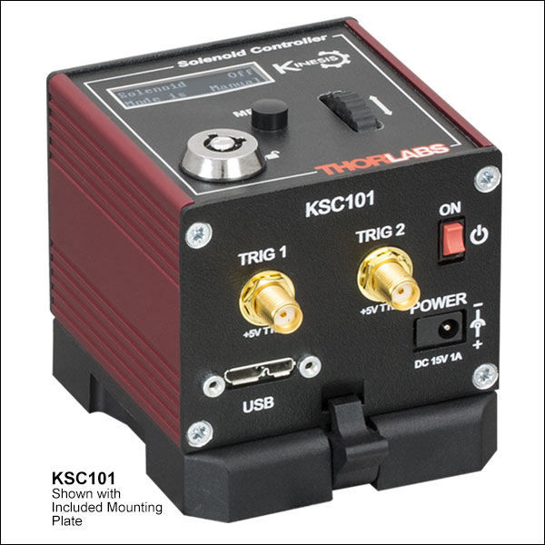
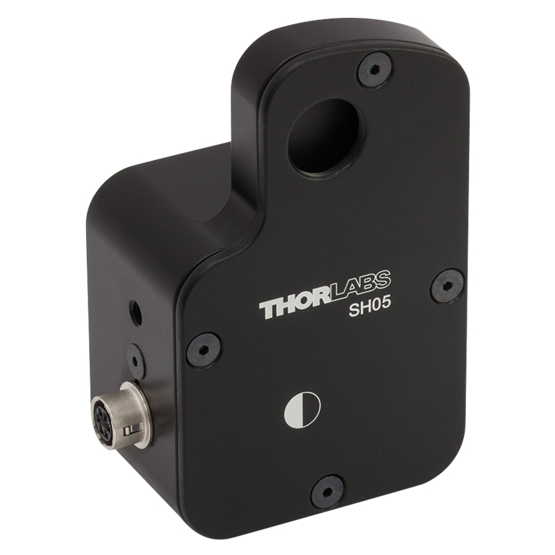

KSC101

Controller Description
The KSC101 is a compact single-channel K-Cube controller from Thorlabs designed for precise control of solenoids. It enables accurate and reliable actuation of solenoids for applications that require controlled force or switching. The KSC101 provides adjustable current settings for solenoid operation and features USB connectivity for computer control via Thorlabs’ Kinesis Software or QuantumION's Thorlabs Cube Repository.
Controller Use-Cases
- KSC101 is used in applications requiring precise solenoid actuation, such as:
- Optical Shutters: Controlled beam blocking or modulation in laser systems.
- Optomechanical Systems: Switching optical paths with high accuracy.
- Industrial Automation: Actuating mechanical locks or switches in precise operations.
Peripherals Examples
- Optical Shutters 
- Motorized Flip Mounts

API Reference
Bases: Tsc
KSC101 K-Cube Solenoid Controller class
Source code in venv/lib/python3.9/site-packages/thorlabs_cube/driver/kcube/ksc.py
7 8 9 10 11 12 13 14 15 16 17 18 19 20 21 22 23 24 25 26 27 28 29 30 31 32 33 34 35 36 37 38 39 40 41 42 43 44 45 46 47 48 49 50 51 52 53 54 55 56 57 58 59 60 61 62 63 64 65 66 67 68 69 70 71 72 73 74 75 76 77 78 79 80 81 82 83 84 85 86 87 88 89 90 91 92 93 94 95 96 97 98 99 100 101 102 103 104 105 106 107 108 109 110 111 112 113 114 115 116 117 118 119 120 121 122 123 124 125 126 127 128 129 130 131 132 133 134 135 136 137 138 139 140 141 142 143 144 145 146 147 148 149 150 151 152 153 154 155 156 157 158 159 160 161 162 163 164 165 166 167 168 169 170 171 172 173 174 175 176 177 178 179 180 181 182 183 184 185 186 187 188 189 190 191 192 193 194 195 196 | |
get_kcubemmi_params()
async
Get the KCube MMI (joystick) parameters.
:return: A tuple containing the joystick mode, max velocity, acceleration, direction sense, preset positions, display settings, and joystick sensitivity.
Source code in venv/lib/python3.9/site-packages/thorlabs_cube/driver/kcube/ksc.py
57 58 59 60 61 62 63 64 65 66 67 68 69 70 71 | |
get_kcubepostrig_params()
async
Get the KCube post-trigger parameters.
:return: A tuple containing (start_pos_fwd, interval_fwd, num_pulses_fwd, start_pos_rev, interval_rev, num_pulses_rev, pulse_width, num_cycles).
Source code in venv/lib/python3.9/site-packages/thorlabs_cube/driver/kcube/ksc.py
180 181 182 183 184 185 186 187 188 189 190 191 192 193 194 195 196 | |
get_kcubetrigio_config()
async
Get the KCube trigger I/O configuration parameters.
:return: A tuple containing the operating mode, and active state for both Trigger 1 and Trigger 2. The active states can assume a High or Low whereas, the operating modes can be both input and output respectively
Input State Operating Modes:
0x00 The trigger IO is disabled
0x01 General purpose logic input (read through status bits using the
MOT_GET_STATUSBITS message).
0x02 Input trigger for relative move.
0x03 Input trigger for absolute move.
0x04 Input trigger for home move.
Output State Operating Modes:
0x0A General purpose logic output (set using the MOD_SET_DIGOUTPUTS message).
0x0B Trigger output active (level) when motor 'in motion'. The output trigger goes high (5V)
or low (0V) (as set in the lTrig1Polarity and lTrig2Polarity parameters) when the stage is in
motion.
0x0C Trigger output active (level) when motor at 'max velocity'.
0x0D Trigger output active (pulsed) at pre-defined positions moving forward (set using
StartPosFwd, IntervalFwd, NumPulsesFwd and PulseWidth parameters in the
SetKCubePosTrigParams message). Only one Trigger port at a time can be set to this mode.
0x0E Trigger output active (pulsed) at pre-defined positions moving backwards (set using
StartPosRev, IntervalRev, NumPulsesRev and PulseWidth parameters in the
SetKCubePosTrigParams message). Only one Trigger port at a time can be set to this mode.
0x0F Trigger output active (pulsed) at pre-defined positions moving forwards and
backward. Only one Trigger port at a time can be set to this mode.
Source code in venv/lib/python3.9/site-packages/thorlabs_cube/driver/kcube/ksc.py
94 95 96 97 98 99 100 101 102 103 104 105 106 107 108 109 110 111 112 113 114 115 116 117 118 119 120 121 122 123 124 125 126 127 128 129 130 131 132 133 134 135 136 137 138 139 140 141 142 | |
set_kcubemmi_params(js_mode, js_max_vel, js_accn, dir_sense, preset_pos1, preset_pos2, preset_pos3, disp_brightness, disp_timeout, disp_dim_level, js_sensitivity)
async
Set the KCube MMI (joystick) parameters.
:param js_mode: Joystick mode (1 = velocity control, 2 = jog mode, 3 = go-to-position mode). :param js_max_vel: Maximum velocity for the joystick. :param js_accn: Acceleration for the joystick. :param dir_sense: Direction sense (normal or reversed). :param preset_pos1: Preset position 1. :param preset_pos2: Preset position 2. :param preset_pos3: Preset position 3. :param disp_brightness: Display brightness. :param disp_timeout: Display timeout in ms. :param disp_dim_level: Display dim level. :param js_sensitivity: Joystick sensitivity.
Source code in venv/lib/python3.9/site-packages/thorlabs_cube/driver/kcube/ksc.py
12 13 14 15 16 17 18 19 20 21 22 23 24 25 26 27 28 29 30 31 32 33 34 35 36 37 38 39 40 41 42 43 44 45 46 47 48 49 50 51 52 53 54 55 | |
set_kcubepostrig_params(start_pos_fwd, interval_fwd, num_pulses_fwd, start_pos_rev, interval_rev, num_pulses_rev, pulse_width, num_cycles)
async
Set the KCube post-trigger parameters.
:param start_pos_fwd: Stage position to start the forward trigger sequence. :param interval_fwd: Interval in encoder counts/microsteps for forward trigger pulses. :param num_pulses_fwd: Number of output pulses during forward move. :param start_pos_rev: Stage position to start the reverse trigger sequence. :param interval_rev: Interval in encoder counts/microsteps for reverse trigger pulses. :param num_pulses_rev: Number of output pulses during reverse move. :param pulse_width: Trigger output pulse width (from 1 μs to 1,000,000 μs). :param num_cycles: Number of forward/reverse cycles.
Source code in venv/lib/python3.9/site-packages/thorlabs_cube/driver/kcube/ksc.py
144 145 146 147 148 149 150 151 152 153 154 155 156 157 158 159 160 161 162 163 164 165 166 167 168 169 170 171 172 173 174 175 176 177 178 | |
set_kcubetrigio_config(trig1_mode, trig1_polarity, trig2_mode, trig2_polarity)
async
Set the KCube trigger I/O configuration parameters.
:param trig1_mode: Mode for Trigger 1 (input/output). :param trig1_polarity: Polarity for Trigger 1 (high/low). :param trig2_mode: Mode for Trigger 2 (input/output). :param trig2_polarity: Polarity for Trigger 2 (high/low).
Source code in venv/lib/python3.9/site-packages/thorlabs_cube/driver/kcube/ksc.py
73 74 75 76 77 78 79 80 81 82 83 84 85 86 87 88 89 90 91 92 | |